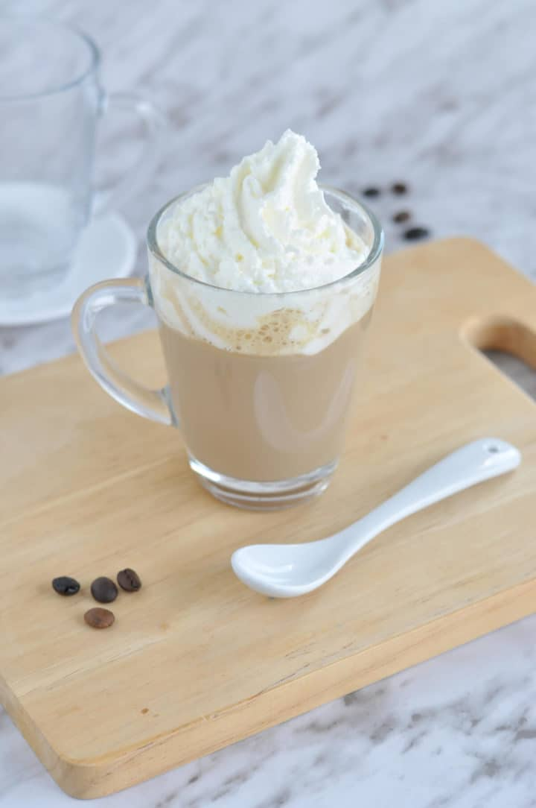

CARAMEL BRULEE LATTE

Description
A strong, aromatic coffee mixed with dreamy caramel brulee sauce (extra points if you make your own!) and creamy milk, all topped off with a generous dollop of whipped cream and even more caramel sauce because why not? This Starbucks caramel brulee latte copycat recipe tastes exactly like the real thing, but it's much cheaper, quicker and easier to make.
Ingredients
- Espresso or strongly brewed coffee- whatever you like to drink at home
- Skim milk - you can use a dairy-free substitute, such as coconut milk or almond milk, but it will affect the flavour.
- Caramel sauce
- Vanilla syrup
- Whipped cream
- Sugar
- Crushed caramel candy
Steps
- First, froth the milk after you’ve made the espresso. You can use an electric milk frother or heat your milk on the stove top and whisk until it’s frothy.
- Now, make the whipped cream! Whip your cream and sugar with a mixer until you see soft peaks.
- Time to assemble! First, pour the espresso into a 16-ounce mug. Then, add the vanilla syrup and caramel sauce and stir until they dissolve. Finally, pour the milk into the mug and top it all with a swirl of whipped cream and some crushed caramel candies!
Return to main page